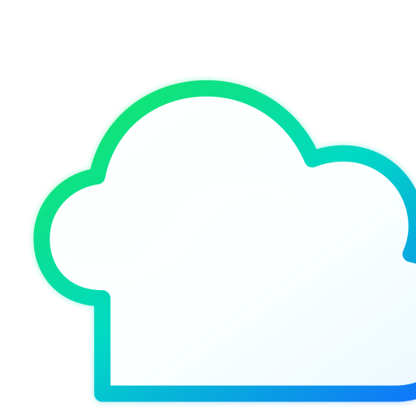

TILLBOT wird gerade gewartet. Bitte später erneut versuchen.

Dein KI-Bereich. Dein Konto. Deine Chats.
Frag drauf los. Ideen, Wissen und Kreativität – alles an einem Ort.
Gestalte deinen Arbeitsbereich.
Mehr Orientierung, einfachere Hinweise und kleine Erklärungen für den Einstieg.
Gestalte Begrüßung und Starttext individuell. Änderungen gelten nur für dein Gerät.
Installiere TILLBOT als App auf deinem Gerät, wenn dein Browser das unterstützt.
Speichere den aktuellen Verlauf als Textdatei.
Schutz aktiv: TILLBOT begrenzt API- und Login-Versuche und schützt Admin-Setup durch zusätzliche Versuchslimits.
Server-Prüfung: Anmeldeversuche werden serverseitig begrenzt.
Grenzen: Das ist Missbrauchsschutz für einen KI-Chat, keine Spiel-Cheat-Erkennung. Es gibt keine Garantie, jeden Bot oder jede Manipulation zu stoppen.
Datenschutz: Chatverläufe und Kontodaten werden zur Funktion auf dem Server gespeichert. Passwörter liegen nur als bcrypt-Hash vor.
Erstelle Tickets und verfolge Antworten vom TILLBOT-Team.
Nur für den in Render konfigurierten Admin-Benutzer. Gib hier den ADMIN_SETUP_SECRET ein – nicht dein normales Kontopasswort.
Kontodaten und Chats werden über den TILLBOT-Server verarbeitet.
Lade Statistik …
Serverdaten werden geladen …
Gestalte deinen Admin-Arbeitsplatz. Einstellungen bleiben lokal in diesem Admin-Browser.
Admin-Befehle (serverseitig autorisiert). shutdown setzt Wartungsmodus; Render selbst wird nicht beendet.
shutdown
Bereit. Tippe help.
Prüft wichtige Sicherheitskonfigurationen und Datenbankverbindung. Erkennt keine aktiven Hacker zuverlässig.
Eine kurze Ankündigung wird allen angemeldeten Nutzern im App-Banner angezeigt.
Accounts verwalten und Adminrechte sicher vergeben oder entziehen.
Support-Anfragen bearbeiten und beantworten.
Lege das tägliche KI-Budget für normale Nutzer fest. Admins bleiben unbegrenzt.
Schaltet die KI für normale Nutzer sofort ab. Admins behalten Zugriff auf das Dashboard.
Status wird geladen …
Live-Metriken, Account- und Chat-Zähler sowie Laufzeit des Backend-Prozesses.